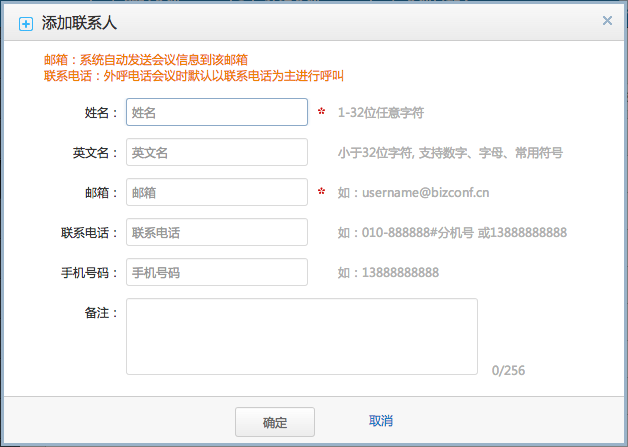

管理您常用的联系人，在会议邀请时，可以将此联系人名单添加到与会人名单中。
1. 选择“通讯录”。
2. 单击“添加联系人”，弹出联系人信息界面。
3. 单击“确定”。
邮箱：当邮箱邀请用户参加会议时，将会议信息发送到此邮箱，用于通知该用户。
联系电话：当电话邀请用户参加会议时，系统默认拨叫此号码，邀请用户加入会议。
注册用户指通过企业管理员添加的用户，此用户已注册在系统中。
1. 选择“通讯录>批量添加联系人”。
2. 选择“添加注册用户”。
3. 在显示的界面中选择一个或多个联系人。
4. 单击“确定”。
企业管理员如有建立组织机构，则可以通过按机构进行快速筛选。
大批量用户通过上传方式进行导入用户，免除手动一个个输入。
1. 选择“通讯录>批量添加联系人”。
2. 选择“上传联系人名单”。
3. 点击“下载联系人模板 ”，保存模板在用户本地端。
4. 打开模板，按字段填写相应内容，进行保存数据。
5. 点击“选择文件”，选择联系人模板。
6. 单击“确定”。
当数据量大时，建议分成几次数据上传。
模板格式切勿修改，否则导致数据格式存在有误。
可将已添加的联系人，通过导出功能进行备份，以便以后用于恢复。
当有多个联系人需要删除时，可以选择批量删除联络人功能。
为方便管理，快速召开会议，可将联系人进行分组。
1. 选择“群组”。
2. 单击“添加群组”，弹出群组信息界面。
3. 单击“确定”
1. 点击“查看成员”。弹出所有组员列表信息。
2. 点击“添加组成员”，弹出所有联系人列表。
3. 选择要添加的成员，可通过搜索功能快速定位用户。
4. 点击“确定”。
5. 组成员列表显示刚已添加的用户。
一个联系人只能加入一个组。